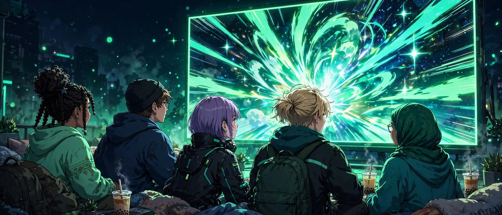

1UP / REÚNE A TU GREMIO コミュニティ
EL ANIME NOS CONECTA.
Debate el último capítulo, comparte tus teorías del manga, fanarts y videos con otros fans. Descubre creadores y conversa con respeto.

Las publicaciones son públicas. Participa con tu cuenta 1UP o como invitado con tu apodo: pregunta, debate y comparte con el gremio.
1UP COMUNIDAD / LA PLAZA
PARA TI
Los debates y publicaciones de la comunidad.
CREAR PUBLICACIÓN
Cargando publicaciones…
1UP / CHAT GLOBAL
CHAT MUNDIAL
Todos pueden leer. Para escribir necesitas iniciar sesión.
Conectando con el chat…
TU IDENTIDAD / 1UP
MI PERFIL
Personaliza tu nombre, avatar y solicita verificación.
VERIFICACIÓN 1UP
El distintivo de propietario solo se asigna por administración. La verificación de creadores requiere revisión de autenticidad, actividad y aportes reales; las vistas o los seguidores por sí solos no la garantizan.
MIS AMIGOS
Las amistades son mutuas: quien recibe la invitación decide si quiere aceptarla.
Inicia sesión para consultar tus solicitudes.